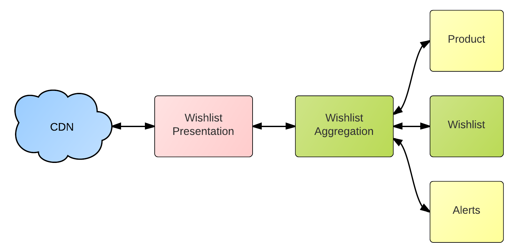
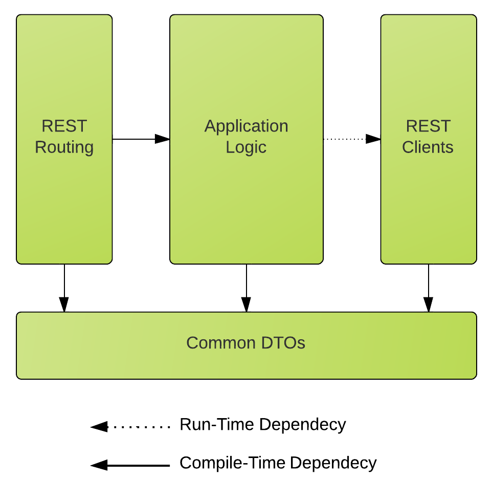

Introduction - names and company
talk is about our first scala project


Actor Tells vs Actor Asks
Asks for small tasks
and only the tasks Futures are good at
Actors Tells for the rest
The guideline we use in our app
We default to actor tells
Why? and what we mean by tasks that futures are good at
Actor Ask - the good
val pages =
(0 to pages by limit).map {
case offset ⇒
prodApi ? GetProds(offset, limit)
}
Future.sequence(pages)
Futures are a handle on an async event
So they are good for jobs where you need
you need to maintain order of a bunch of async events
Actor Ask - the bad
Potential timeouts. Everywhere!
timeout shadowing
and if you get them wrong:
akka.pattern.AskTimeoutException: Timed out
at akka.pattern.PromiseActorRef$$anonfun$1.apply$mcV$sp(AskSupport.scala:312)
at akka.actor.DefaultScheduler$$anon$8.run(Scheduler.scala:191)
at akka.dispatch.TaskInvocation.run(AbstractDispatcher.scala:137)
at akka.dispatch.ForkJoinExecutorConfigurator$MailboxExecutionTask.exec(AbstractDispatcher.scala:506)
at scala.concurrent.forkjoin.ForkJoinTask.doExec(ForkJoinTask.java:262)
at scala.concurrent.forkjoin.ForkJoinPool$WorkQueue.runTask(ForkJoinPool.java:975)
at scala.concurrent.forkjoin.ForkJoinPool.runWorker(ForkJoinPool.java:1478)
at scala.concurrent.forkjoin.ForkJoinWorkerThread.run(ForkJoinWorkerThread.java:104)
Every ask needs a timeout
Can understand why the error message is bad
Akka doesn't know the semantics of the work in your future
you need to provide good error messages with transform
Can understand why the stacktrace is bad
You code might not be running
You code might not be running
This can shadow more useful error messages
let's see an example of this
Routing
̶ ? ￫
App Core
̶ ? ￫
̶ ? ￫
̶ ? ￫
spray-client 5 sec timeout →
ask 5 sec timeout ↓
Rest Clients
Demo timeout shadowing
First implementation - it's bad - don't build this
Timeout issues
So as you can see it is important to get timeouts right
This isn't a new problem. Spring apps should have db timeout < response timeout
but there are alot more - harder to manage
timeout big enough?
timeout too big? If it is too large we still have futures hanging
around long after the response has been sent
You kind of need a sliding scale from left to right to avoid timeout shadowing
Better timeout errors
f recoverWith {
case t: TimeoutException ⇒
Future.failed(ProductApiTimeout)
}
Only we know the semantics behind a future. So we have to give better error messages.
Or a default succssful value (stale data from cache)
But, you have to do this for every future in your app
That is a lot of noise in your code for something that doesn't happen often
Also this doesn't solev the shadowing problem
Better timeout errors
f recoverWith {
case t: TimeoutException ⇒ {
log.error("Prod API took too long")
Future.failed(ProductApiTimeout)
}
}
So this puts us in a better place for debugging
we are avoiding losing error messages from timeout shadowing
but is still high noise:code ratio and we still have loads of timeouts to manage
Routing
̶ ? ￫
App Core
̶ ? ￫
̶ ? ￫
̶ ? ￫
Rest Clients
Fundamental problem - we are not using actors for anything
Decoupling - but there are easier ways to do
Actors give you many things - ability to deal with state
supervision hierarchy - we aren't using them
Might as well do away with actors and use bare futures.
But that wouldn't solve our issues with timeouts/cleanup
Routing
➡
➡
App Core
➡
➡
Rest Clients
trait PerRequest extends Actor {
def r: RequestContext
def target: ActorRef
def message: RestMessage
setReceiveTimeout(2.seconds)
target ! message
def receive = {
case res: RestMessage ⇒
complete(200, res)
case v: Validation ⇒
complete(400, v)
case ReceiveTimeout ⇒
complete(504, Error("Request Timeout"))
}
def complete[T](status: StatusCode, obj: T) = {
r.complete(status, obj)
stop(self)
}
override val supervisorStrategy =
OneForOneStrategy() {
case e ⇒ {
complete(500, Error(e.getMessage))
Stop
}
}
}